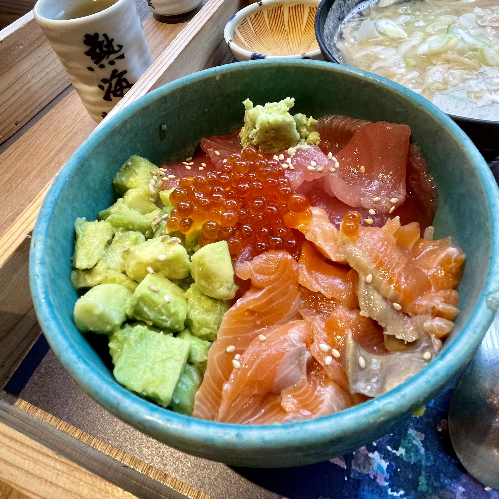
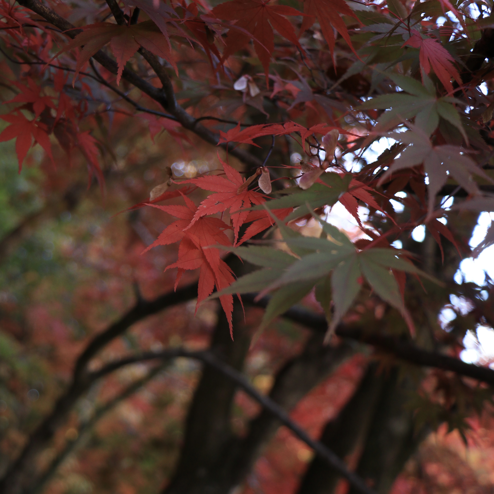

Welcome to Rinn!
Discover your favourite place in Japan with me.
Welcome to Rinn!
Discover your favourite place in Japan with me.
About
Hello! I'm Rinn.
I've been living in Japan for years. Throughout those years, I've
experienced the unique and colorful Japanese culture and have fallen
in love with it multiple time over. In this little blog, I want to
share my individual experiences to you guys.
Travel
- Select your destination -
Tokyo
Tokyo (東京, Tōkyō) is Japan's capital and the world's most populous metropolis.Tokyo offers a seemingly unlimited choice of shopping, entertainment, culture and dining to its visitors.
Hakone
Hakone (箱根) is part of the Fuji-Hakone-Izu National Park, less than one hundred kilometers from Tokyo. Famous for hot springs, natural beauty and the view across Lake Ashinoko of nearby Mount Fuji, Hakone is one of the most popular destinations among Japanese and international tourists looking for a break from Tokyo.
Atami
Atami (熱海) lies at the northeastern base of the Izu Peninsula, less than an hour west of Tokyo by shinkansen. Due to its proximity to Tokyo, Atami has long been a popular seaside resort town with plenty of hot springs and ryokan in addition to museums and other cultural heritage sites.
Kusatsu
Kusatsu Onsen (草津温泉) is one of Japan's most famous hot spring resorts and is blessed with large volumes of high quality hot spring water said to cure every illness but lovesickness.
Karuizawa
Karuizawa (軽井沢) is an upmarket mountain resort at the foot of the active volcano Mount Asama in Nagano Prefecture. Located at an altitude of roughly 1000 meters, the town provides a pleasant escape from the summer heat.
Photography
- Let's see Japan -
Shrine
Food
Sakura
Autumn leaves

Illumination
Contact
- Have a question? -
Address
Chiba,Ichikawa,Minato5-2
Contact Number
070-8131-9232
theinttheintrinn@gmail.com
Website
Rinn.com
Copyright © Rinn All rights reserved